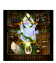
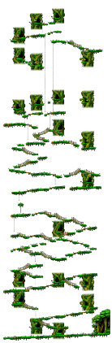
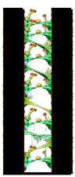

攻略 · 冰雷大魔導士 · MapleStory Classic 2.0.6
冰雷大魔導士
法師走冰、雷這條路：巫師 → 魔導士 → 大魔導士。範圍大、會冰住怪、會瞬移。下面依序講特色、能力值、轉職、技能和武器。
職業特色
冰和雷兩種屬性
冰錐術、冰風暴、暴風雪是冰屬性，電閃雷鳴、落雷凝聚、閃電連擊是雷屬性（客戶端技能有標屬性）。怪物怕冰就用冰、怕雷就用雷。
一次打一群
二轉 電閃雷鳴 最多打 6 隻；三轉 冰風暴 範圍很大；四轉 閃電連擊 也是最多 6 隻。
會把怪冰住
冰雷合擊 打到的怪會結冰不能動，比較不會被打。
會瞬移
瞬間移動 一下閃 150 距離，跑圖、躲怪都靠它。
魔攻更高、打更快
三轉 魔力激發 讓魔攻變成 140%（要多花 MP）；極速詠唱 讓攻擊速度快 2 級。
身體很脆
漢斯自己說：法師體力弱、近戰脆弱，要小心別死。魔心防禦 被打時改扣 MP，少扣血。
能力值怎麼點
主屬性是智力（INT）。漢斯說法師是「以高智力與魔力為特徵的職業」：
讓我來告訴你關於魔法師的事吧。魔法師是個以高智力與魔力為特徵的職業…雖然能用超自然的力量消滅敵人，但在近戰中卻相當脆弱。體力也較弱，要小心別死了。
幸運不點，大部分要幸運的法師裝都穿不上，所以下面「裝備建議」只列武器。
轉職路線
初心者 → 法師 → 巫師(冰、雷) → 魔導士(冰、雷) → 大魔導士(冰、雷)
- 一轉Lv.8漢斯維多利亞 / 魔法森林圖書館
到 Lv.8 去魔法森林的圖書館找 漢斯，跟他說要當法師。轉職時他會送一把練習用的武器，記得裝備欄留空位。
你想成為魔法師嗎…？但是需要一些條件…等級必須在8級以上…讓我來看看你吧…？

魔法森林圖書館 漢斯 位置 - 二轉Lv.30漢斯維多利亞 / 魔法森林圖書館
先找 漢斯 拿信，再去「魔法森林北部」找 法師轉職教官。他會把你送進「法師2轉考驗場」，打 刺菇菇 收集 黑珠 ×30，跟裡面的教官說話就過關。回去找漢斯選「巫師(冰、雷)」。
考驗場裡沒有商店也沒有傳送點，做完才能出來，死掉一樣會掉經驗。藥水先帶夠。在那裡面打倒那些傢伙，就能獲得叫做黑珠的珠子。那是聚集了牠們醜陋骯髒的心所形成的特殊珠子。收集30顆這種珠子，並跟裡面的同伴說話，就算及格了。
怎麼從「魔法森林」走到「魔法森林北部」 3 段- 在「魔法森林」走到最左邊的傳送點 → 「魔法森林北郊」
- 在「魔法森林北郊」走到左邊的傳送點 → 「大木林Ⅰ」
- 在「大木林Ⅰ」走到左下方的傳送點 → 「魔法森林北部」

魔法森林北部 法師轉職教官 位置 刺菇菇 Lv.35HP 600物防 50迴避 10
法師2轉考驗場 刺菇菇 出現位置 二轉要 Lv.30 是推定（跟其他職業一樣），客戶端台詞沒寫等級。
- 三轉Lv.70羅貝亞艾納斯島 / 長老公館
去冰原雪域的長老公館找 羅貝亞。任務一步一步怎麼走，看三轉攻略。
看三轉任務完整攻略 →（選「法師」）
- 四轉Lv.120葛雷托神木村
四轉教官是 葛雷托（客戶端寫「第4次轉職官」）。
現在的客戶端還沒有神木村的地圖，四轉還不能轉。下面的四轉技能先給你參考。
技能怎麼點
順序和點數是玩家建議；技能名稱、上限、說明、滿等數值都是客戶端資料。點技能名可以看每一級的數值。
一轉｜法師 Lv.8～30
算到升 30 級拿到的點數：轉職 1 點＋9～30 級每級 3 點，共 67 點，剛好點完。
- 1
- 2等級提升時，使用AP提升Max MP時，Max MP的增加量提升。點滿，MP 上限變多。滿等：最大MP 升級時增加20，使用升級點數提升時增加10（要先學：魔力淨化 5 級）
- 3
- 4
- 5回頭把魔力淨化點滿，回魔更快。
- 6
二轉｜巫師(冰、雷) Lv.30～70
算到升 70 級拿到的點數：轉職 1 點＋31～70 級每級 3 點，共 121 點，剛好點完。
- 1
- 2
- 3每次對敵人施放魔法攻擊時，會吸收一點敵人的MP。但是如果敵人的MP為0，則無法再吸收。A 路線（打天使猴這類有魔力的怪練等）：先點滿魔力吸收，打怪會吸怪的 MP。滿等：攻擊時按30%的概率吸收怪物總MP的40%
- 4A 路線：再把瞬間移動點滿。
B 路線（打螃蟹或要常常瞬移的地圖）：這兩步倒過來，先瞬移 20、再魔力吸收 20。 - 5
- 6
- 7在一定時間內降低周圍敵人的移動速度。無法重複使用，且一次無法對6隻以上的敵人使用。最後 1 點給緩速術。滿等：消耗MP16, 持續40秒, 怪物移動速度-40（要先學：瞬間移動 5 級）
三轉｜魔導士(冰、雷) Lv.70～120
算到升 120 級拿到的點數：轉職 1 點＋71～120 級每級 3 點，共 151 點。前 6 步用掉 121 點，最後 30 點兩條路選一條。
- 1製造鋒利的冰塊，朝多個敵人投擲。命中時，除了冰冷屬性的怪物外，其他怪物會被凍結，且一次無法攻擊6隻以上的敵人。主要練功技能，點滿。滿等：消耗MP50, 基本攻擊力90, 熟練度10%, 攻擊範圍(200, 150)%
- 2
- 3消耗大量的HP與MP，提升魔法攻擊速度。點到 11 級就是「攻擊速度快 2 級」，11 到 20 級都一樣，只差持續時間。滿等：消耗HP30、MP25, 持續200秒 魔法攻擊速度提升?個等級（要先學：魔力激發 3 級）
- 4回頭把魔力激發點滿。
- 5以混合冷氣和閃電屬性的魔法攻擊一個敵人。對冷氣或閃電屬性弱點的怪物可造成大量傷害，並有一定機率使敵人結冰。點滿，打單隻會把怪冰住。滿等：消耗MP22, 基本攻擊力140, 熟練度10%, 持續2秒 結冰
- 6一定時間內將周圍的多數敵人變為封印狀態。被封印狀態的怪物無法使用技能，且對BOSS怪物無效。點滿。滿等：消耗MP30, 持續20秒 以95%機率封印成功（要先學：魔力激發 3 級）
- 7集中閃電的力量製造長槍，攻擊一個敵人。怪物會受到閃電屬性攻擊。剩下 30 點選一條：要去魚屋練等就點落雷凝聚 30。滿等：消耗MP24, 基本攻擊力170, 熟練度10%
- 8對冰冷、閃電屬性的魔法攻擊具有耐性。或是：要打王就點冰雷抵抗 20，再把極速詠唱補到 20（共 29 點，多 1 點）。炎魔右手放冰、本體放雷；龍王左頭放冰、右頭放雷。平常練功打得到冰雷攻擊的怪大多剋屬性，不會去打，用不到。滿等：冰雷屬性魔法抵抗增加70%
四轉｜大魔導士(冰、雷) Lv.120～
四轉流派很多，這裡不排加點順序，自己研究。核爆術、魔法反射、閃電連擊一開始只能點到 10 級（客戶端 masterLevel 10），要技能書才能往上點。
裝備建議
全智法幸運是 0，防具大多穿不上，所以只列武器。想加能力可以試試商城的點裝。
| 拿到 | 名稱 | 魔攻 | 速度 | 哪隻怪會掉 |
|---|---|---|---|---|
| Lv.8～40 | 木製短杖 | 23 | 普通 | 怪物不會掉 一轉就能拿。 |
| Lv.40～70 | 黃色雨傘 | 52 | 快 | 月光精靈 Lv.45、青螃蟹 Lv.48 還沒開放的地區：葛雷族人 Lv.40、紅色機器人 Lv.44、月妙 Lv.45、怨靈發條熊 Lv.85 雨傘每個職業都能拿。 |
| Lv.43～ | 楓葉法杖 | 58 | 普通 | 怪物不會掉 有就拿（三轉要放極速詠唱）。 |
楓葉法杖：楓葉商會活動也能用活動幣換一支（不能交易的版本），數值一樣。